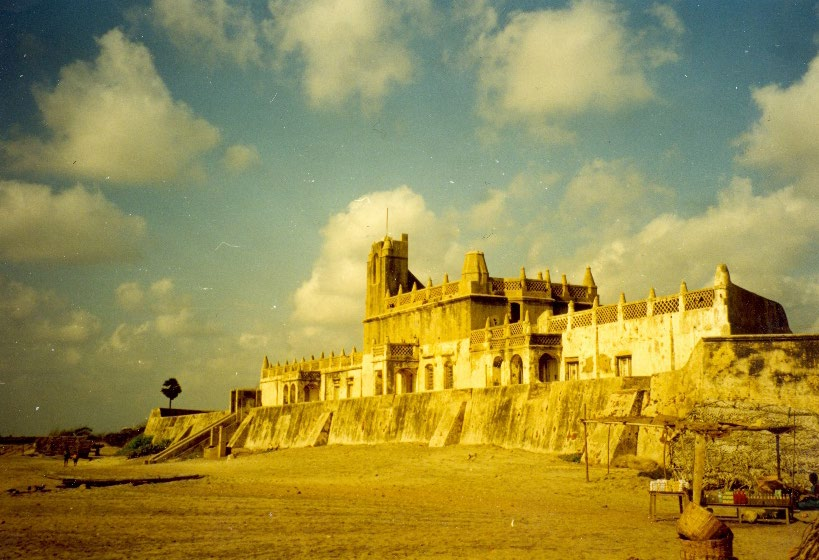
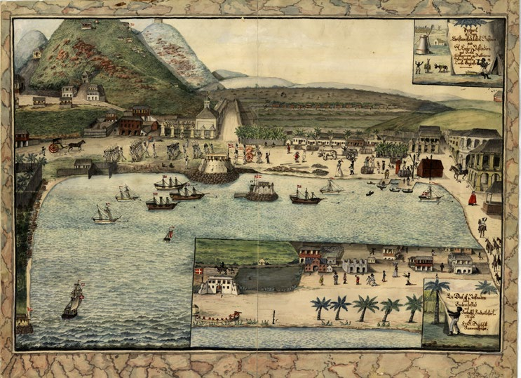

1.5 – SØFARTSNATION OG
sidde 17
KOLONIMAGT (fra ca. 1620)
I 1600- og 1700-tallet blev Danmark ligesom mange andre vesteuropæiske lande en kolonimagt. Det vil sige, at Danmark erhvervede landområder uden for Danmark og erklærede dem som en del af det danske rige.
Bedre skibe, mere viden om navigation samt vellykkede portugisiske og spanske opdagelsesrejser i 14- og 1500-tallet havde gjort det muligt for europæerne at krydse de store oceaner og sejle til Asien, Amerika og Afrika for at handle og få magt over befolkningerne der. Med disse nye muligheder begyndte et kapløb om kolonier mellem Vesteuropas store lande, hvor Storbritannien med tiden udvik lede sig til den dominerende kolonimagt. Danmark fik også klemt sig ind, hvor det var muligt.
Den danske koloni- og handelsvirksomhed havde ikke mindst blikket rettet mod Asien og oprettede handelskolonier i Trankebar og Serampore i det nuværende Indien. Herfra kunne danske skibe fragte krydderier, salpeter til fremstilling af krudt, bomuldsvarer og andre kostbare varer til Europa. Selvom Danmark ikke etablerede egentlige kolonier i Kina, blev handlen med Kina, hvorfra der blev hentet te, porcelæn og silke, dog den største og mest indbringende for den danske handelsflåde i 1700-tallet. Fæstningen Dansborg i den tidligere danske koloni Tra
Fæstningen Dansborg i den tidligere danske koloni Trankebar i Indien.
Læremateriale Til Indfødsretsprøven

sidde 18
Der blev også bygget danske forter på Guldkysten ved Afrikas vestkyst i det nuværende Ghana, hvorfra i alt over 100.000 slaver blev sejlet til de danske kolonier i Vest-indien (Caribien) – Sankt Thomas, Sankt Croix og Sankt Jan – på den anden side af Atlanterhavet. På de Dansk Vestindiske Øer blev slaverne – ofte med fysisk afstraffelse – tvunget til at arbejde i sukkerrørsplantagerne eller i de europæiske plantageejeres huse. Sukkeret blev transporteret til København, hvor det blev solgt videre enten i Danmark eller i udlandet. Slavehandelen blev forbudt fra 1803, men frem til 1848 var det stadigvæk tilladt at holde slaver på øerne.
Fra 1721 ankom kristne missionærer til Grønland med støtte fra den danske konge. Den første var den norske præst Hans Egede. Ud over at målet var at gøre den grønlandske befolkning kristen, var det også et mål at sælge varer fra Grønland som sælskind, spæk og hvalkød.
Danmark solgte sine kolonier i Indien og Ghana til Storbritannien i midten af 1800-tallet. De Dansk Vestindiske Øer blev solgt til USA i 1917 og går i dag under navnet De Amerikanske Jomfruøer. Grønland har nu selvstyre, men er stadigvæk i et såkaldt rigsfællesskab med Danmark sammen med Færøerne.Christiansted på Sankt Croix i 1815,
Christiansted på Sankt Croix i 1815, som var den vigtigste by på de Dansk Vestindiske Øer på den tid.
Læremateriale Til Indfødsretsprøven

Fonte: Læremateriale til Indfødsretsprøven, SIRI.